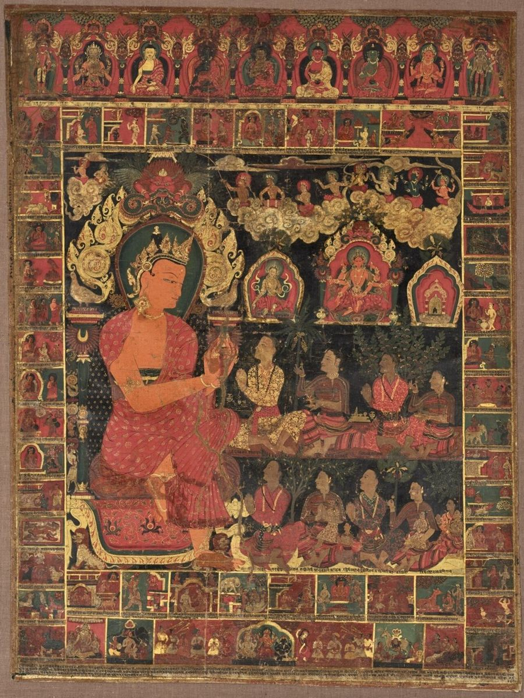
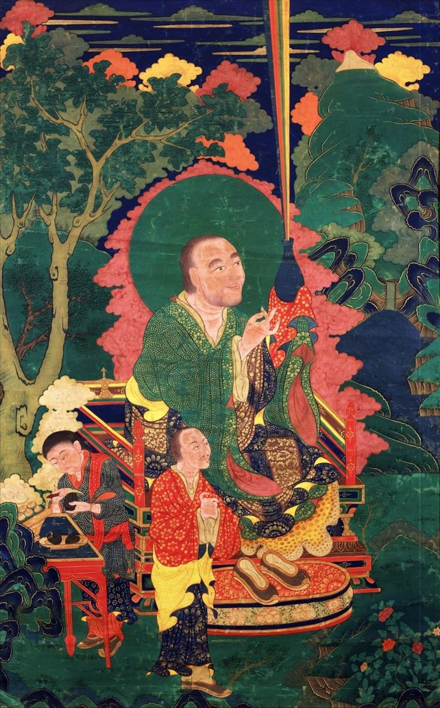

Thangka Painting Styles: Menri, Karma Gadri, and the Newar Tradition Compared
If you look at enough thangkas, you start to notice that they do not all look the same. Some are packed with bright, saturated color and dense ornament. Others feel airy, with pale skies and delicate landscapes. Some show strong Nepalese influence in the faces and jewelry. These differences come from painting traditions, or schools, that developed in different regions and periods.
Understanding the main styles helps you describe what you like, read a seller's description accurately, and appreciate why two paintings of the same deity can feel completely different.
Why Styles Developed
Tibetan painting grew out of a meeting of influences. Early Tibetan Buddhist art drew heavily on the art of Nepal, especially the Newar artists of the Kathmandu Valley, and on artistic currents from India and Central Asia. Later, Chinese landscape painting added new ideas about space, clouds, and nature. Over centuries, Tibetan masters blended these sources into distinct schools, each with its own preferences for color, composition, and proportion.
The religious content and the iconographic rules stayed the same across schools. What changed was the visual language used to express them.

The Newar Tradition
Newar artists from the Kathmandu Valley were famous across the Himalayas for their painting and metalwork, and they worked for Tibetan monasteries for centuries. Early Tibetan thangkas often show this influence clearly.
How to Recognize It
- Strong, saturated reds and deep blues, often with a red background.
- A central figure surrounded by a decorative throne or arch, with smaller figures arranged in neat registers or grids.
- Rich jewelry and ornamental detail with a clear Nepalese character.
- Relatively little landscape; the space is filled with pattern and figures.
Today, Newar painters in Nepal, such as those working in the paubha tradition, continue to produce paintings with this distinctive style.
Menri: The Menla Dondrup School
The Menri style is traditionally traced to the fifteenth-century painter Menla Dondrup. It became one of the most influential schools in central Tibet and remains the basis of much thangka training today.
How to Recognize It
- Balanced, symmetrical compositions with a large central figure.
- Landscape elements such as hills, clouds, and water, but still with a fairly dense and colorful arrangement.
- Bright mineral colors, careful shading, and rich gold work.
- Clear, orderly organization that is easy for a meditator to read.
Many contemporary studios in Nepal and India trace their teaching back to Menri, sometimes in a later form called New Menri. If you see a modern thangka described as "traditional Tibetan style," it is often related to this school.
Khyenri
The Khyenri style, associated with the painter Khyentse Chenmo, developed around the same period as Menri. It is known for more dynamic energy, particularly in wrathful deities, and for strong, expressive figures. Khyenri works are rarer today, and the style is mostly seen in historical paintings and murals.
Karma Gadri: The Encampment Style
The Karma Gadri style developed in the sixteenth century in connection with the Karma Kagyu tradition, and it was later refined in eastern Tibet. It shows the strongest influence from Chinese landscape painting.
How to Recognize It
- Large areas of open sky and soft, pale backgrounds.
- Gentle, naturalistic landscapes with trees, rocks, and flowing water.
- A lighter, more muted palette with subtle shading.
- Figures that feel spacious and placed within a real environment rather than a crowded frame.
People who enjoy calm, airy images often love Karma Gadri. It works especially well in minimalist modern interiors.
Regional and Contemporary Styles
Beyond these major schools, many regional styles exist. The Rebkong area in Amdo, for example, is famous for its painting workshops and its bright, highly detailed work. In Bhutan, painting has its own national character. In Nepal and India, many studios now blend traditions or develop recognizable house styles of their own.
Contemporary artists also experiment with new compositions, while still respecting iconographic rules for deity proportions and attributes. Some create modern art inspired by thangkas, which is a different category from paintings intended for practice.
Comparing the Schools Side by Side
It can help to look at the same subject painted in different styles. Imagine a seated Buddha under a tree. In a Newar-influenced painting, the Buddha would sit inside an ornate arch, surrounded by small figures in tidy rows, against a deep red ground. In a Menri painting, he would sit on a lotus above a green landscape with stylized hills, bright clouds, and a blue sky that darkens toward the top. In a Karma Gadri painting, he might appear smaller within a wide, pale landscape, with a flowing tree, misty distances, and soft blue-green tones.
All three are faithful to the same iconography. The difference is in how much of the canvas belongs to ornament, how much to nature, and how intense the color is. Once you train your eye on these three questions, you can usually place a painting within a broad tradition in a few seconds.
Faces, Hands, and Proportions
Style also shows up in small details. Faces in Newar-influenced work often have a fuller, rounder shape with heavy-lidded eyes. Menri faces tend to be balanced and serene, with crisp outlines. Karma Gadri faces can feel softer and more naturalistic. Hands, fingers, and the drape of robes also vary. Collectors often find that the face is the single best clue to a painter's training, because faces are usually painted by the most senior artist in a workshop.
Proportion systems, on the other hand, are shared. A Buddha's body is measured on the same basic grid whatever the school, which is why the overall shape of a seated figure looks familiar across traditions even when the color and landscape change.
Color Palettes by School
Palette is another quick clue. Newar-style paintings lean on strong reds, deep blues, and plenty of gold. Menri paintings use a full, bright mineral palette with vivid greens and blues in the landscape. Karma Gadri works favor softer blues, pale greens, and gentle washes that leave more of the background light. If a painting feels bold and jewel-like, it probably leans toward Newar or Menri; if it feels like a misty morning, it is likely closer to Karma Gadri. Whatever the school, deity colors stay fixed by tradition; the Medicine Buddha thangka, for example, is always painted deep blue.
How to Choose a Style for Yourself
- For a bold focal point: Newar or Menri styles with saturated color and dense detail.
- For a calm, spacious feeling: Karma Gadri with open skies and soft tones.
- For meditation practice: any style is valid, but ask your teacher if your lineage prefers one.
- For a modern home: lighter Karma Gadri works or simpler Menri compositions often blend best.
Whatever you choose, ask the seller which school the painter trained in and how long they studied. A clear answer shows that the studio understands what it is selling.

Frequently Asked Questions
Is one style more authentic than another?
No. All major schools are authentic traditions. Quality depends on the skill of the painter and the materials, not the school.
Can one painting mix styles?
Yes. Many modern painters combine elements, for example a Menri figure with a Karma Gadri landscape.
Which style is most common today?
Menri-based styles are very common in modern workshops, but Karma Gadri and Newar styles are also widely available.
Conclusion
Newar, Menri, Khyenri, and Karma Gadri are different voices telling the same sacred stories. Once you can recognize dense Newar ornament, balanced Menri compositions, and the open skies of Karma Gadri, every thangka you see becomes easier to read and enjoy, and choosing the right piece for your space becomes a matter of matching a tradition to your own taste.